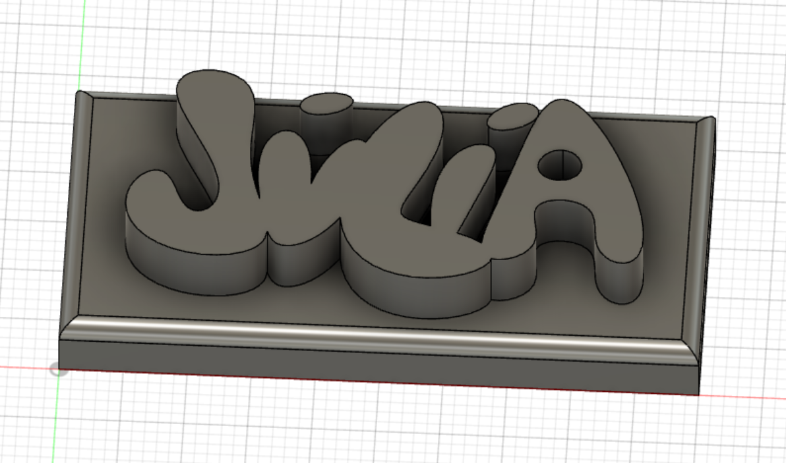
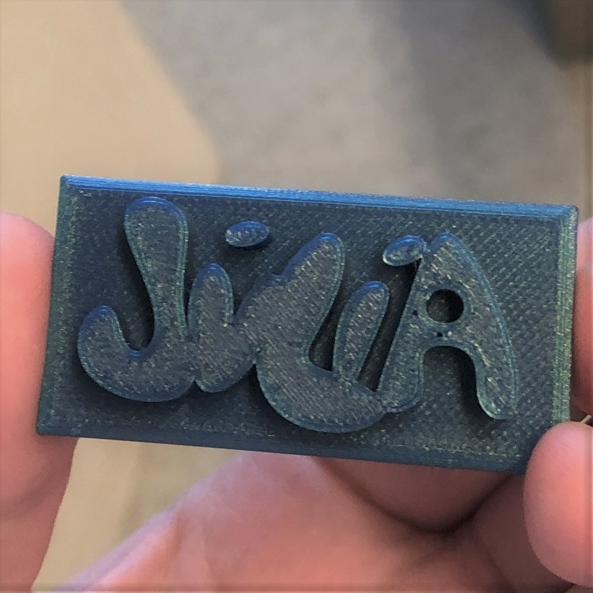

3D prentun
Hugmynd og hönnun
Í þessu verkefni áttum við að hanna módel fyrir 3D prentun og prenta út hlut. Ég var að fara að kynna vélaverkfræðina á Háskóladeginum svo ég ákvað að mér fannst skemmtileg leið til að sýna smá hvað við lærum í vélaverkfræðinni að prenta út nafnspjald í 3D. Mig langaði að hafa þetta svoldið skemmtilegt svo ég hannaði nafnið mitt með skemmtilegum bubbly stöfum í FUSION 360. Ég lét nafnspjaldið vera 5x2,5 cm og lét spjaldið ná 1 cm út (botn 0,5 og nafn 0,5 cm).

Prentun
Eftir að ég var orðin sátt með módelið var verkefnið vistað sem 3MF skrá og sett á USB kubb. Næst var skráin opnuð með forritinu Cura og módelið slice-að. Notað var blátt generic PLA filament og þurfti vekefnið engar stoðir. Prentunin tók 47 mínútur og kom nafnspjaldið vel út.

3D skönnun
Í þessu verkefni á að 3D skanna hlut. Ég byrjaði á því að hlaða niður appinu 3D Photos en það virkaði aðeins fyrir fólk með mac tölvur. Næst hlóð ég niður appinu LiDARScanner en ég var ekki með nógu nýjan síma fyrir það app, en allt er þegar þrennt er og með þriðja appinu sem ég sótti, Modelified, gat ég unnið verkefnið með.
Framkvæmd:
Forritið kom með ágætar leiðbeiningar um hvað og hvernig væri best að skanna. Mikilvægt var að hluturinn væri ekki of lítill né of stór, og best væri ef hluturinn væri mattur en þó með ólíkar áferðir. Til vals urðu Dr. Martens klossarnir mínir. Forritið býr til 3D mynd af hlut með því að skeyta ljósmyndum saman. Ég tók 56 ljósmyndir af vinstri skónum mínum og reyndi að passa að ná öllum hliðum vel. Forritið sá svo um að púsla saman 3D módeli af skónum.
Annað skemmtilegt sem appið gat gert er að sýna 3D modelið á sama tíma og það sýnir umhverfið. Hér er videó þar sem 3D módelið er borið saman við vinstri skóinn.